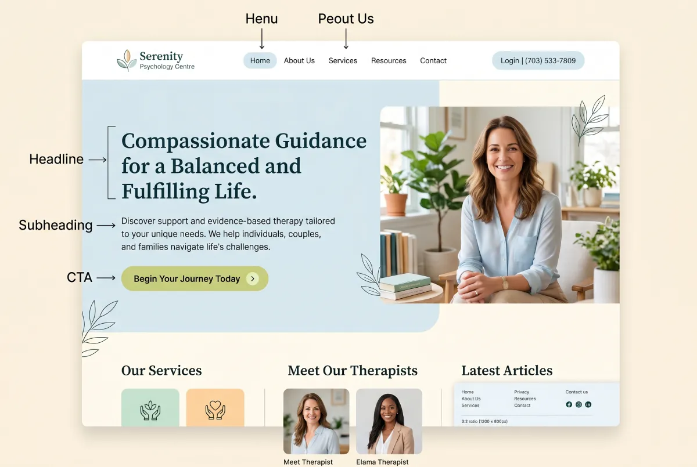
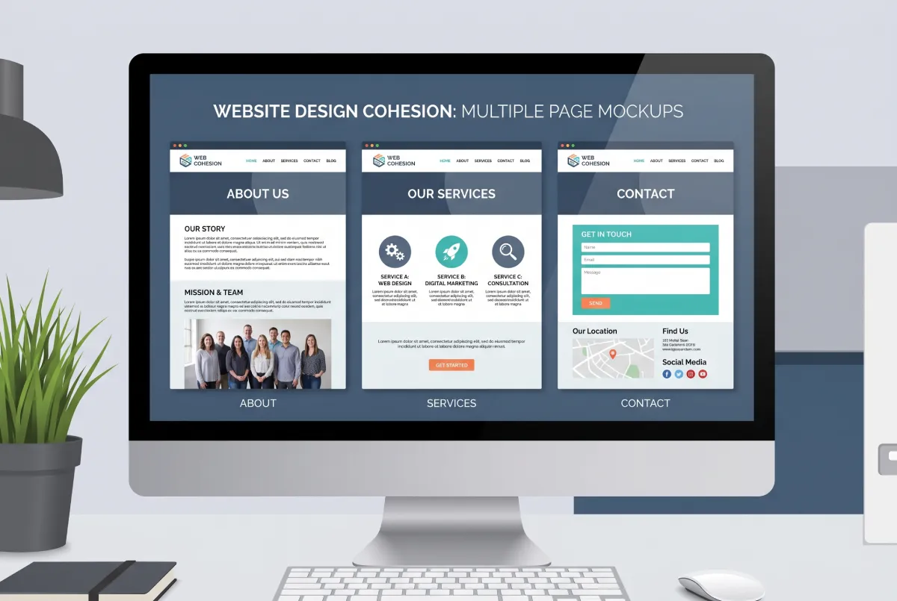

If you are looking to build a website or improve your current one, the first question immediately arises: which pages do I actually need? How many are enough? What must each one include?
The answers aren't universal. They depend on how you work, who you serve, and what you want to achieve. But a specific structure works for almost every therapist or counselor, and this structure carries solid, proven logic.
Let's break it down page by page.
The Home Page: The Most Critical
The home page is what the visitor sees first. It delivers the first impression. It forces the decision to stay or leave. And it has very little time to execute that job.
The page everyone sees first. It must answer three questions in three seconds: Who you are, what you do, and why the visitor should stay.
What the home page must include:
A strong Hero section: A clear phrase capturing exactly what the patient gains. Do not write "Welcome to my practice." Write something specific, like "A quiet space to find clarity in a busy city." Or "Private therapy for adults navigating anxiety, relationships, and life transitions in New York." Follow this immediately with a contact button.
A brief introduction: A few lines about who you are and what you offer. You don't need your full resume here. You need to create a sense of connection.
Your specialties: A short list or grid highlighting the main areas you treat. Anxiety, depression, couples therapy, trauma. Each specialty must link to its own dedicated page.
A human element: A photo of yourself or a video, if you feel comfortable. The therapist who presents as a human being, rather than just a professional, builds trust exponentially faster.
A closing CTA: At the bottom of the page, place another button to get in touch. Someone who scrolled through the entire home page is ready to reach out. Give them the opportunity without forcing them to search for it.

The About Page: The Most Underrated
People deeply underestimate the About page. Many therapists fill it with degrees, certifications, and clinical jargon. By doing so, they lose a massive opportunity.
The page that decides if the visitor will actually contact you. The goal is not to impress, but to connect.
Statistically, the About page ranks as the second most visited page on a therapist's website. The prospective patient wants to feel they know the person before they book a session.
What the About page must include:
Why you became a therapist: Not necessarily your entire life story, but an authentic reason. What drew you to this work. This humanizes the professional.
How you work: Your approach. CBT, psychodynamic, integrative, EMDR. But explain it using simple words. The patient does not need academic definitions. They need to understand what they will actually experience in the room with you.
Who you serve best: Do not fear stating exactly who you speak to. "I work primarily with high-achieving adults experiencing burnout and workplace stress" performs much better than "I see everyone." The right patient feels you are speaking directly to them.
Your credentials: Degrees, licenses, additional training. These matter, but they do not form the core of the page. Place them at the end, or in a dedicated section.
A great photo: A high-quality photo showing you as an approachable human being makes a massive difference. It doesn't need stiff formality. It needs authenticity.
The Services Pages: Where You Win SEO
Many therapist websites feature a single "Services" page listing everything they do in bullet points. This completely fails from an SEO perspective. And it rarely feels personal enough to persuade.
One dedicated page for each core specialty. This drives your local SEO and demonstrates deep, focused expertise.
If you specialize in anxiety, couples therapy, and trauma, you need three separate pages. One for each specialty.
Every services page must answer these questions:
Who is this service for: Describe the patient who perfectly fits this therapy. What they face. How they feel. This makes them think, "This is exactly for me."
How the therapy works: A brief, human explanation of the method. What happens in the session. How many sessions they typically need.
What the patient gains: Where a person ends up after doing this work with you. Avoid generic terms like "improved mental health." Make it vivid: "You start sleeping better. Your relationships gain new depth. You stop feeling like you are running without direction."
The Fees Page: Fewer Surprises, More Bookings
Many therapists avoid listing prices on their site. They view it as too "commercial" for the nature of therapy. I understand the logic, but it creates a massive friction point.
One of the most heavily searched pages by prospective patients. Transparency here eliminates awkward discoveries after the first contact.
If someone cannot afford to work with you, you want them to discover that before they reach out, not after. Hiding your fees does not stop patients from caring about price. It forces them to contact you just to find out the cost, only to leave if it doesn't fit their budget.
What the Fees page must include:
State your per-session cost clearly, even as a range (e.g., "$150 - $200 per session"). Provide precise details on which insurances you accept. If you do not accept insurance, explain your sliding scale or superbill options, if applicable.
And something most forget: include a brief reminder of why therapy is a worthy investment. Not to justify the price, but to remind them of the profound value you provide.
The FAQ Page: Handling Objections Before They Speak
The FAQ page acts as a remarkably smart tool. It answers the questions the prospective patient holds but lacks the confidence to ask yet. And it simultaneously serves as a powerful SEO asset.
Answers patient questions before they reach out. It reduces back-and-forth emails and increases the quality of your inquiries.
Questions worth answering:
"How do I know if therapy is right for me?" Many people remain unsure if they "need" therapy or if their situation is "serious enough." An honest answer here lowers that barrier instantly.
"What happens in the first session?" Uncertainty about the process causes people to procrastinate. A clear description of the first session removes that anxiety.
"How long does therapy take?" You cannot give a single timeline, but an honest explanation that it depends entirely on their goals works perfectly.
"Do you offer online sessions?" A practical question many search for immediately.
"What if I feel we aren't a good fit?" People think this but rarely ask it. An open, honest answer builds immediate trust.

The Contact Page: The Final Step Before the Booking
The entire site exists to bring the patient right here. To the contact page.
The page that converts the visitor into a patient. It must remain simple, clear, and completely free of friction.
What it must include:
A simple form: Name, email, phone number, and a field for a brief message. Do not use fifteen fields. The patient reaching the contact page has already decided to reach out. Do not make it difficult.
Alternative contact methods: Phone number and direct email address. Some prefer to call. Some prefer their own email client. Give them both options.
Address and hours, if applicable: If you run a physical office, the address remains crucial. It boosts local SEO and gives the patient the logistical details they need.
A short phrase that lowers resistance: "Reaching out does not commit you to anything. We start with a brief consultation to see if we are a good fit." This removes the fear that sending an email automatically locks them into therapy.
What You Do NOT Need
Many therapists build overly complex sites with blogs, newsletters, resource libraries, and elements they do not initially need. This scatters your energy and often confuses the visitor.
You do not need a blog to achieve good SEO. You need properly structured specialty pages. You do not need a newsletter signup on your homepage. You do not need a "Resources" page offering free PDFs. Those come later, if and when they make strategic sense for your practice.
Start with what serves your visitor today: clear information, a human presentation, and an effortless way to contact you.
The Sequence That Matters: The Visitor's Map
When designing the site, think about how the visitor actually moves. Most of the time, the journey looks like this:
Home page (decides if they stay). About page (decides if you are the right person). Specialty page (decides if your service fits their exact need). Fees page (checks if it remains financially viable). Contact page (executes the final step).
Every page must lead naturally to the next. And every page must offer a clear way to contact you, because the patient might make their decision at any point in that journey.
The Bottom Line
A therapist's website does not need complexity. It needs clarity, a human touch, and solid structure. The core pages you need are: Home, About, Individual Services (one for each main specialty), Fees, FAQ, and Contact.
That provides exactly enough to build trust, rank on Google, and convert visitors into booked patients. Everything else can wait.
Want a Site That Actually Does Its Job?
At Evida Studio, we design every single page with one ultimate goal: converting the right visitor into your next patient. Let's start with a conversation.
Let's Talk